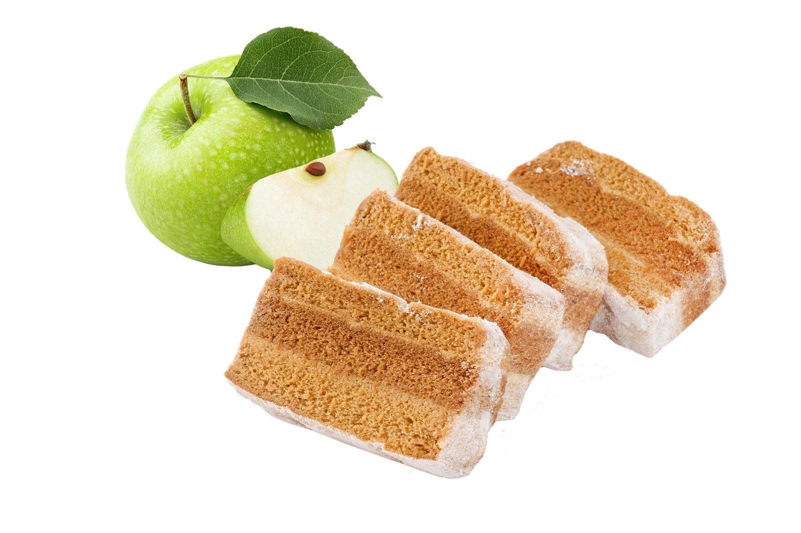
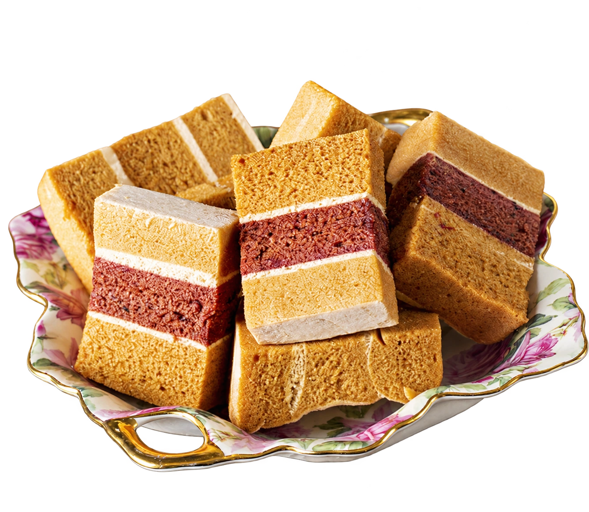
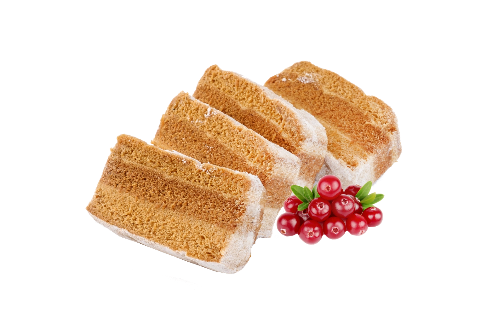

Под упаковкой
Переключите упаковку и настоящий срез — рассмотрите слои ближе.
Посмотреть срез
Яблоки, ягоды и характер Белёва.
Выберите сладости к своему столу.
Три способа познакомиться
с белёвскими сладостями

Переключите упаковку и настоящий срез — рассмотрите слои ближе.
Посмотреть срезВыберите 2–3 продукта. Состав, вкус и формат окажутся рядом.
Выбрать для сравнения
Город, магазин, точный адрес. Найдите сладости рядом с вами.
Найти магазинКоробка знакомит с продуктом.
Срез рассказывает о нём больше.

Упаковка выбранного товара. Срез — фотография вида пастилы, а не отдельного вкуса.